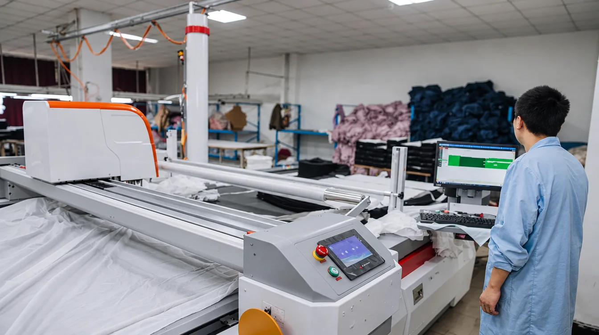
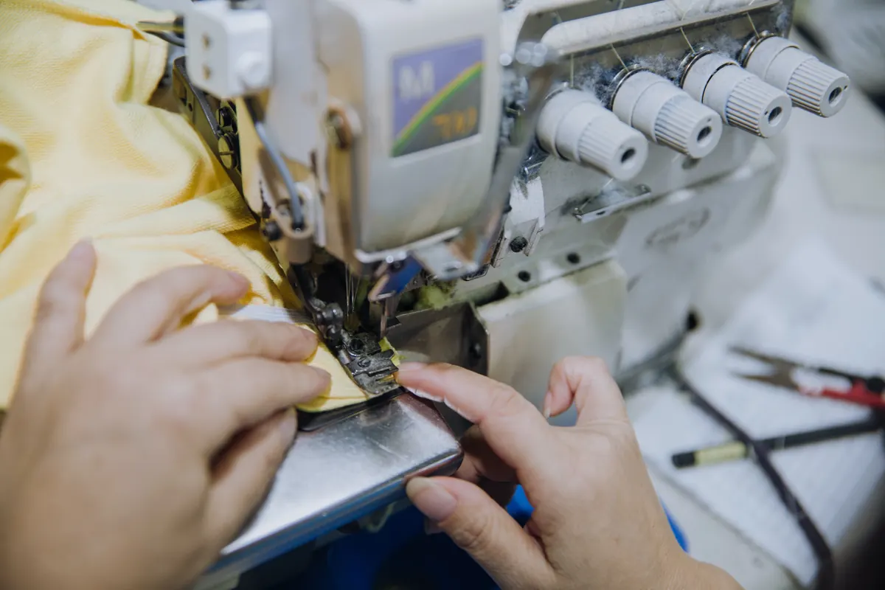

PARTNER FACTORY
NINGBO HUAHE KNITWEAR
중국 저장성 닝보 · 니트 전문 · 2003년 설립
20년 넘게 니트 의류만 만들어 온 공장입니다. adidas · Disney 공장 인증을 받았고, 2006년부터 해마다 WRAP 골드 인증을 유지하고 있습니다.
- 공장 면적
- 15,000 ㎡
- 인원
- 400+ 명
- 연 생산
- 2,000,000 장
- 봉제 라인
- 7 개
- WRAP Gold
- adidas 인증
- Disney 인증
- adidas · New Balance · Mizuno · Reebok · E-LAND · SPAO 생산

